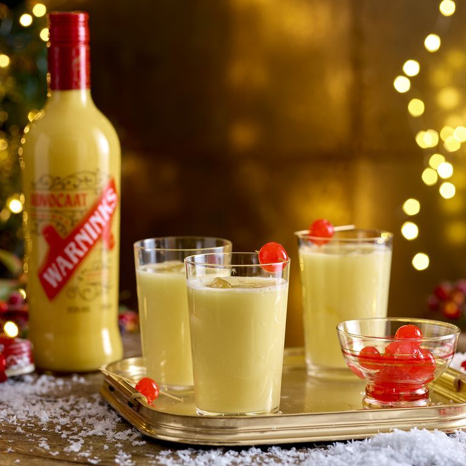

Snowball Cocktail

Serve a classic snowball at Christmas for your guests. With advocaat, lemonade and ice, it's the ultimate retro cocktail to celebrate the festive season
Ingredients
- 10-15ml lime juice or lime cordial, (optional)
- 50ml advocaat
- 50ml sparkling lemonade
- ice, to serve
- 1 maraschino cherry
Steps
- Fill a glass with ice and if using
- Add up to 15ml of lime juice or lime cordial (or to your taste).
- Pour the advocaat and lemonade over the ice and stir gently until the outside of the glass feels cold.
- Garnish with the maraschino cherry.
Return to recipes